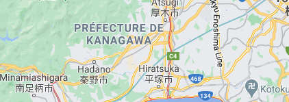

Destination
City Kanagawa
Kanagawa-ken is a prefecture of Japan located in the Kantō region of Honshu.[1] Kanagawa Prefecture is the second-most populous prefecture of Japan at 9,058,094 (1 October 2015) and has a geographic area of 2,415 km2 (932 sq mi). Kanagawa Prefecture borders Tokyo to the north, Yamanashi Prefecture to the northwest, and Shizuoka Prefecture to the west. Kanagawa Prefecture is part of the Greater Tokyo Area, the most populous metropolitan area in the world, with Yokohama and many of its cities being major commercial hubs and southern suburbs of Tokyo.
